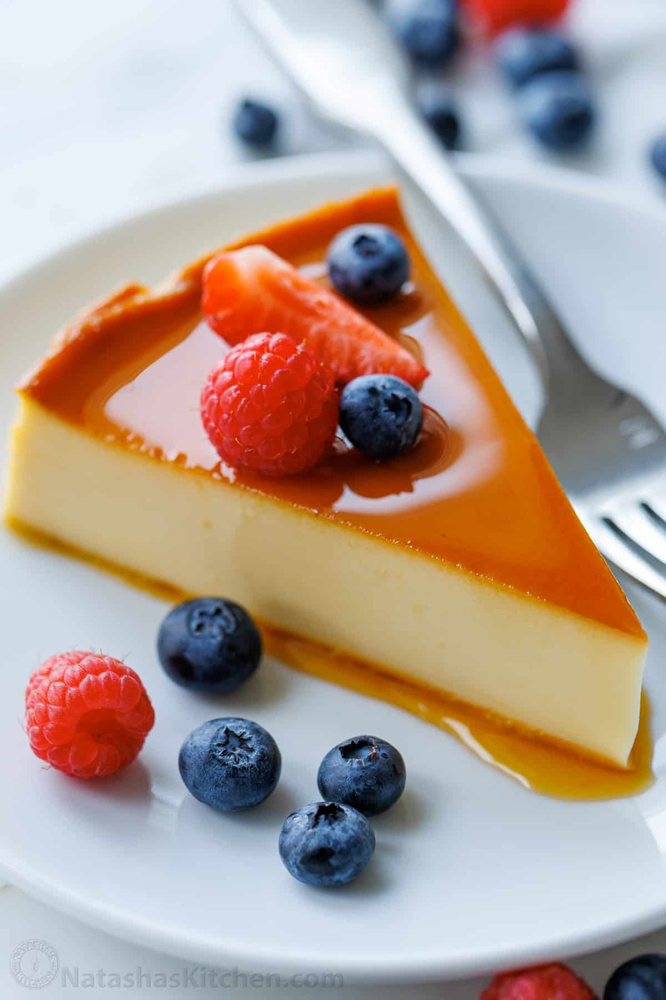
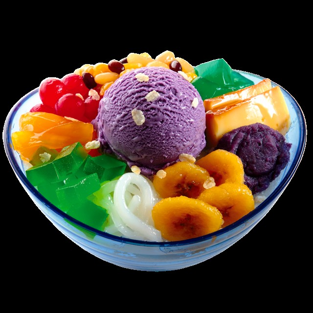
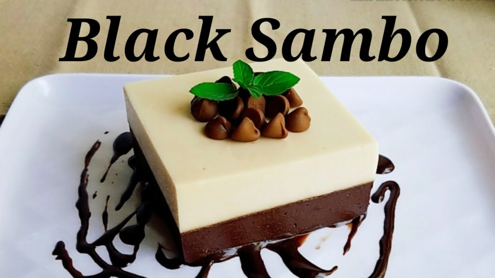

At Kylz Food Corner,
we serve authentic Filipino dishes and traditional sweets made with love and rich flavors.
From savory favorites like adobo, sinigang, pancit, and lumpia to delightful treats like leche flan and halo-halo,
every bite brings you the true taste of the Philippines.
Our menu is inspired by classic home-cooked recipes that bring comfort and joy to every table.
Whether you’re craving a hearty meal or a sweet dessert,
Kylz Food Corner is your go-to place for delicious Filipino
flavors made fresh and served with warmth.
Taste the tradition. Feel at home!


